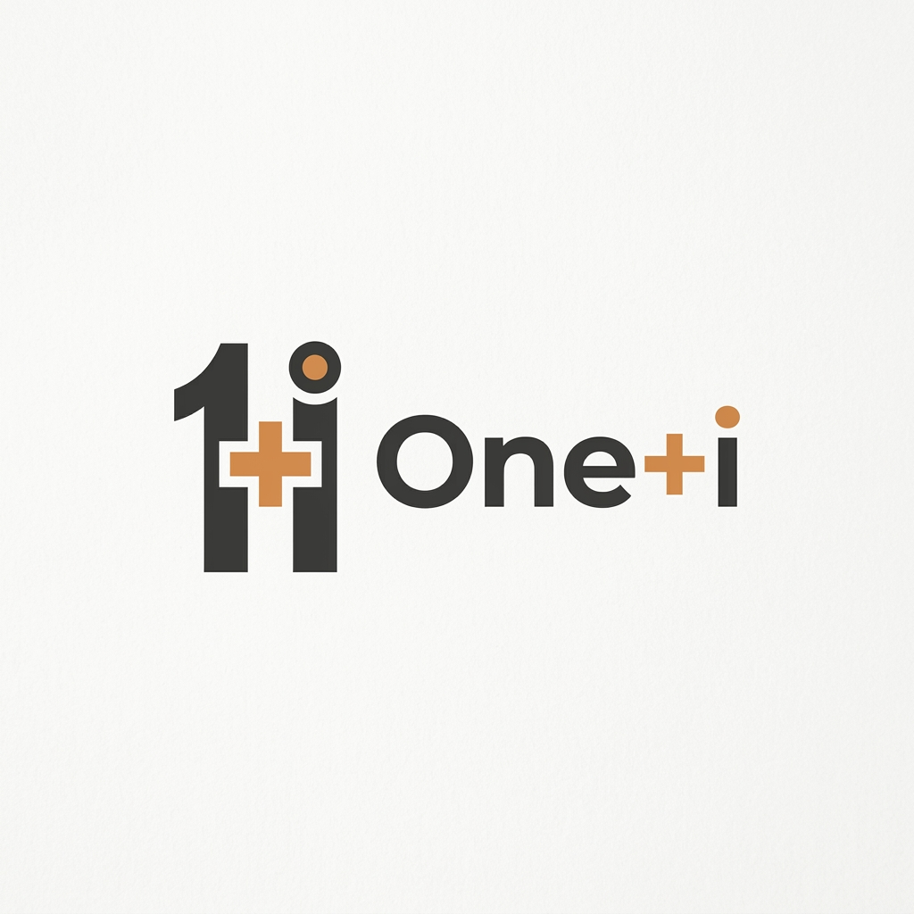

EVIDENCE BEFORE CONFIDENCE
55 selectable questions covering all 17 courses, from agent risk and delegated authority through runtime controls, evaluation, operating models, and the enterprise capstone.